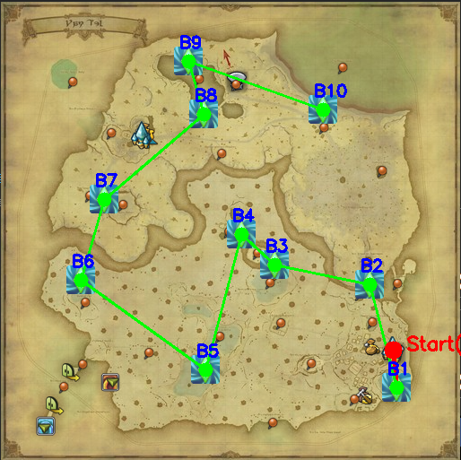
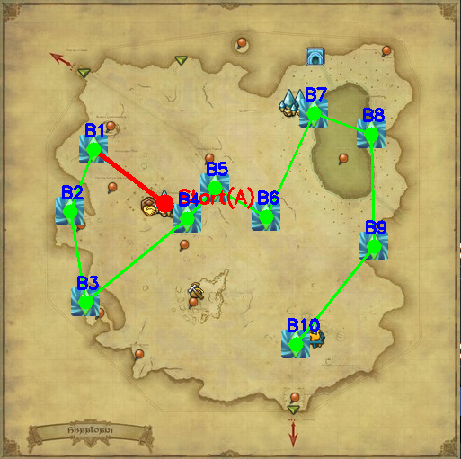
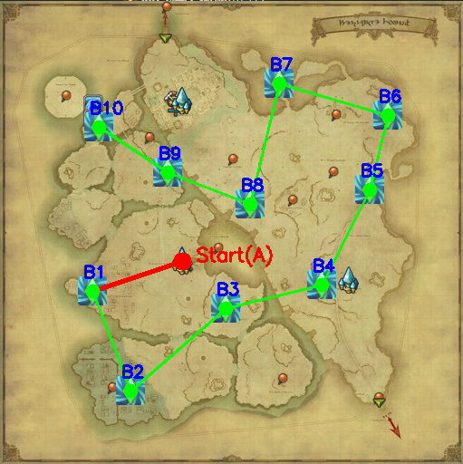

📝 使用說明：
- 主地圖：直接在網頁上按
Ctrl+V貼上截圖，或使用右側按鈕上傳。 - 起點 (A)：預設讀取
A.png(乙太水晶)。 - 目標 (B)：預設讀取
B.png(風脈泉)。請直接從灰機wiki截圖後貼上。 - 設定完成後，點擊下方 開始計算與繪製 按鈕。
備註：
- 2.0至6.0版本的風脈泉已經過優化，每個地圖皆只需要4個風脈泉即可。且每個風脈泉皆放置於重要地點附近，請隨手按下風脈儀確認位置。
- 言下之意:這工具基本沒用了
- 7.0請參照下方參考路線。請注意，路線僅供參考，此工具並未將如地圖出入口、地形等加入運算。
- 若有其他遊戲或個人的路徑需求，還是可以使用此工具來協助你。只是預設為協助FF14的風脈泉路線，自行上傳圖片即可。
原先預計刪除此工具，但...Token都用了，就先留著吧。
支援貼上或拖曳
Ctrl + V 貼上 或 拖曳圖片至此
或從右側選單上傳
A
辨識容許度
0.6
將強制縮放為 32x32
B
辨識容許度
0.7
預設縮放為 40x40
結果將顯示於此
7.0 地圖路徑參考
奧闊帕恰山

克扎瑪烏卡濕地

亞克特爾樹海

夏勞尼荒野

遺產之地

活著的記憶